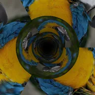

Tunnel

Bekleedt een eindeloze tunnel met de laag en vliegt erdoorheen. Fase verschuift de textuur in de lengte.
Instellingen
| Instelling | Type | Bereik | Standaard |
|---|---|---|---|
| Rotatie X | Hoek | -3600° tot 3600° | 0° |
| Rotatie Y | Hoek | -3600° tot 3600° | 0° |
| Rotatie Z | Hoek | -3600° tot 3600° | 0° |
| Fase | Getal | -1000 tot 1000 | 0 |
| Snelheid | Getal | -20 tot 20 | 1 |
| Draaiing | Getal | -360 tot 360 | 0 |
| Herhaling | Getal | 1 tot 16 | 3 |
| Mist | Getal | 0 tot 1 | 0.4 |
| Mistkleur | Kleur | – | #000000 |
| Positie | Punt (X, Y) | -5000 px tot 5000 px | 0 px, 0 px |
| Schaal | Getal | 0.05 tot 10 | 1 |
| Stijl | Keuze | Klassiek, Standaard | Klassiek |